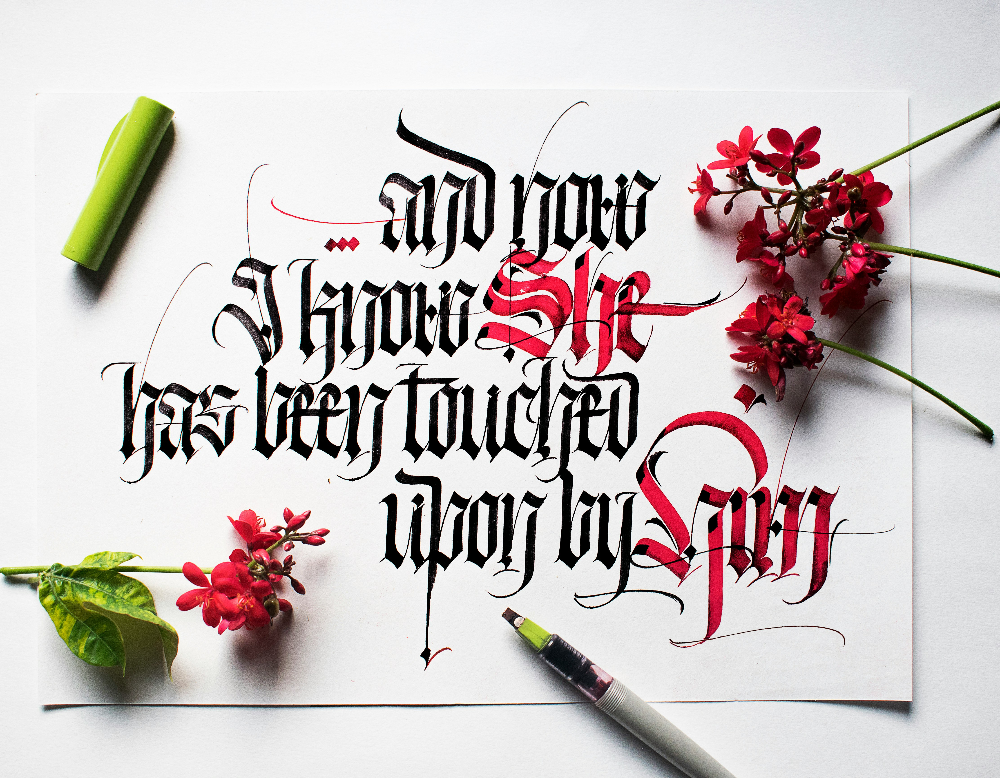
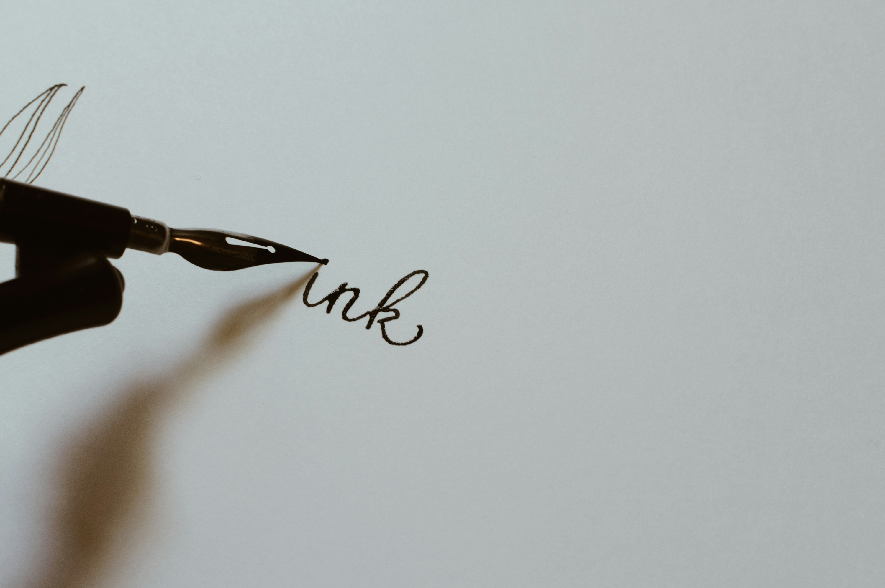
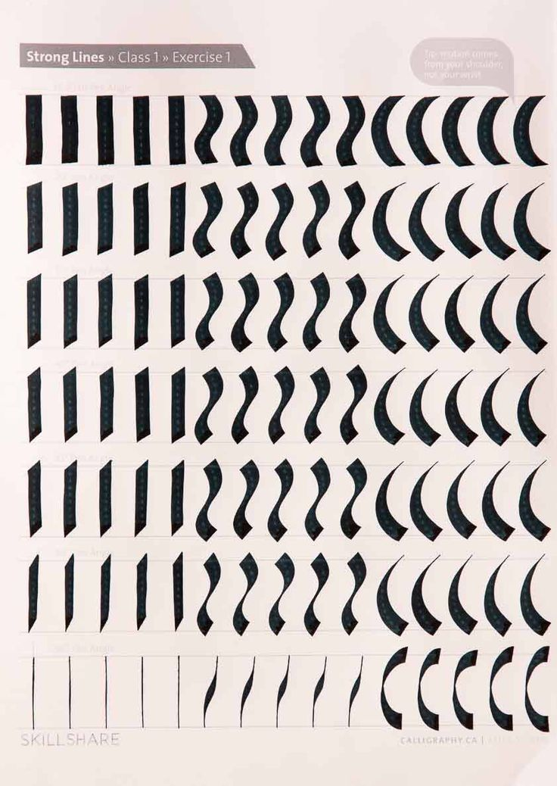

Calligraphy

A couple years ago I wanted to improve my handwritting. This lead me to exploring Calligraphy and now it's one of my favorite hobbies.
In this website I will introduce calligraphy and three main font that I like to write in. I will also go over my favorite tools and supllies when I'm making calligraphy.
What is Calligraphy?

Calligraphy is the art of decorative handwritting using either a brush or a pen. You can start out by practicing different pen or brush strokes and once you have a hang of it use those strokes to form letters. Below is an example of practice strokes with the broad tip pen. Doing these are a great way to get started with calligraphy because it helps build muscle memory and confident when you start writing letters and words. Doing these practice strokes are also a great warm up before you start on your projects.

Supplies
When I started learning calligraphy I used broad tipped pens. These are good for italic and gothic style fonts. Pointed tip pens are good for flowy fonts like cursive and copperplate.
Fountain pens vs dip pens
Fountain pens are pens with ink held inside of them. Dipped pens much like the name suggests are pens that are dipped into ink bottles. I prefer fountain pens mostly for the convenience, hower fountain pens require special ink that is water soluable. This can limit what kinds of ink you can use, but with dipped pens you can used more kinds of ink.
Brush Pens
Brush pens are also very popular and good for cursive style calligraphy. While I personnally pefer broad tipped pens, using a brush pen can be relazing and rewarding. Click here to learn more
My Favorites
Here's a list of my favorite calligraphy supplies and brands.
- Fountain pens: Pilot Parallel pens
- Fountain pen ink: Diamine
- Brush pens: Fudenosuke